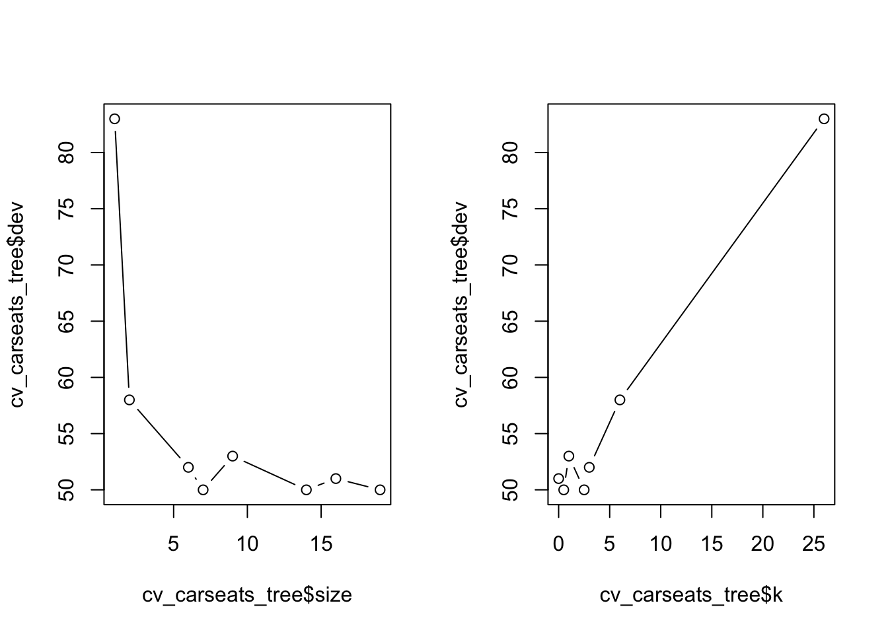
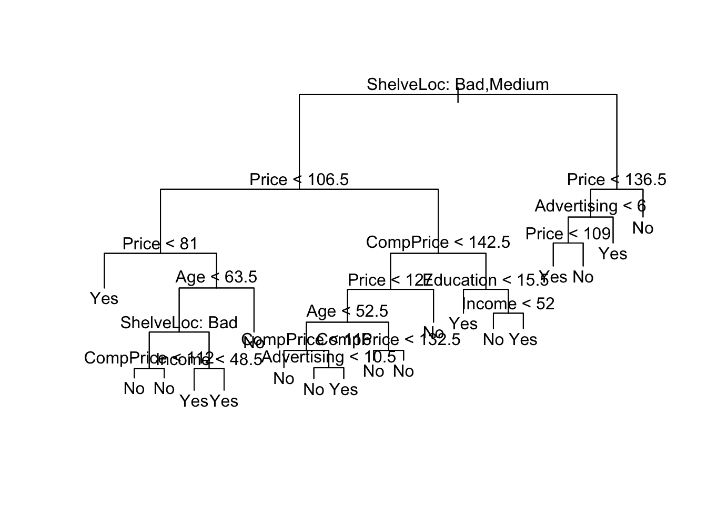
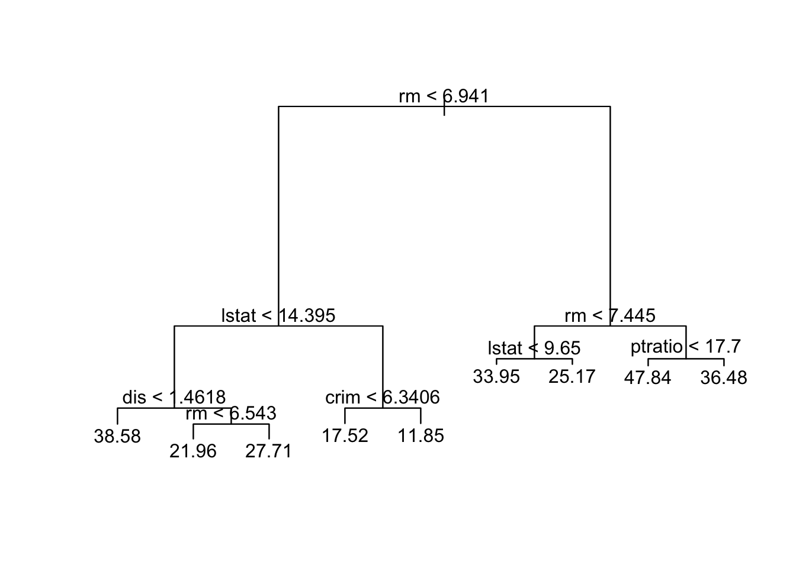
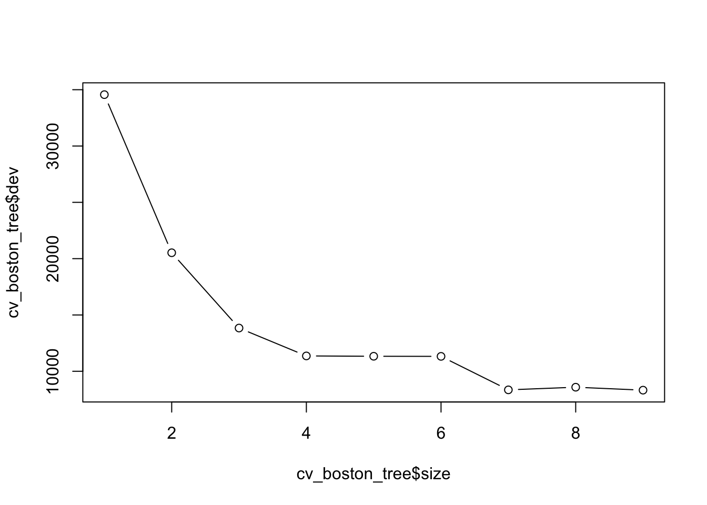
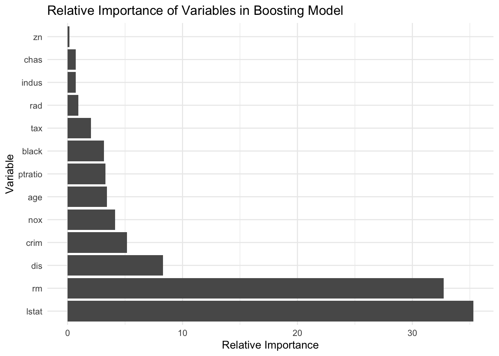

#install.packages("tree")
library(ISLR)
library(tree)
library(ggplot2)Section 8.2 - Decision Trees
Decision Trees
We will use the Carseats data. Sales in this data set is a continuous variable. We start by converting it to a binary one that equals “Yes” if Sales \(> 8\) and “No” otherwise.
carseat_data <- Carseats
high_sales <- as.factor(ifelse(carseat_data$Sales > 8, "Yes", "No"))
carseat_data <- data.frame(carseat_data, high_sales)
carseat_data = carseat_data[, -1]Let’s again split the data into training and test sets
set.seed(222)
train <- sample(seq(nrow(carseat_data)),
round(nrow(carseat_data) * 0.5))
train <- sort(train)
test <- which(!(seq(nrow(carseat_data)) %in% train))We can now train a decision tree using the function tree()
?treeHelp on topic 'tree' was found in the following packages:
Package Library
cli /opt/homebrew/lib/R/4.3/site-library
xfun /opt/homebrew/lib/R/4.3/site-library
tree /opt/homebrew/lib/R/4.3/site-library
Using the first match ...carseats_tree <- tree(high_sales ~ ., data = carseat_data[train,])Plot the results
plot(carseats_tree)
text(carseats_tree, pretty = 0)
From this, we see that shelving location seems to be the most important determinant and price is the second most. Beyond that, this tree is very hard to read. If we just type the tree object name, we get:
- The split criterion (e.g. Price < 92.5)
- The number of observations in that branch
- The deviance
- The overall prediction for the branch
- The fraction of observations in that branch that are Yes/No
- Branches with terminal nodes are indicated by *
carseats_treenode), split, n, deviance, yval, (yprob)
* denotes terminal node
1) root 200 271.500 No ( 0.58500 0.41500 )
2) ShelveLoc: Bad,Medium 154 189.500 No ( 0.69481 0.30519 )
4) Price < 106.5 55 75.790 Yes ( 0.45455 0.54545 )
8) Price < 81 9 0.000 Yes ( 0.00000 1.00000 ) *
9) Price > 81 46 63.420 No ( 0.54348 0.45652 )
18) Age < 63.5 31 40.320 Yes ( 0.35484 0.64516 )
36) ShelveLoc: Bad 10 10.010 No ( 0.80000 0.20000 )
72) CompPrice < 112 5 0.000 No ( 1.00000 0.00000 ) *
73) CompPrice > 112 5 6.730 No ( 0.60000 0.40000 ) *
37) ShelveLoc: Medium 21 17.220 Yes ( 0.14286 0.85714 )
74) Income < 48.5 7 9.561 Yes ( 0.42857 0.57143 ) *
75) Income > 48.5 14 0.000 Yes ( 0.00000 1.00000 ) *
19) Age > 63.5 15 7.348 No ( 0.93333 0.06667 ) *
5) Price > 106.5 99 90.800 No ( 0.82828 0.17172 )
10) CompPrice < 142.5 84 57.200 No ( 0.89286 0.10714 )
20) Price < 127 46 45.480 No ( 0.80435 0.19565 )
40) Age < 52.5 20 26.920 No ( 0.60000 0.40000 )
80) CompPrice < 116 5 0.000 No ( 1.00000 0.00000 ) *
81) CompPrice > 116 15 20.730 Yes ( 0.46667 0.53333 )
162) Advertising < 10.5 9 11.460 No ( 0.66667 0.33333 ) *
163) Advertising > 10.5 6 5.407 Yes ( 0.16667 0.83333 ) *
41) Age > 52.5 26 8.477 No ( 0.96154 0.03846 )
82) CompPrice < 132.5 21 0.000 No ( 1.00000 0.00000 ) *
83) CompPrice > 132.5 5 5.004 No ( 0.80000 0.20000 ) *
21) Price > 127 38 0.000 No ( 1.00000 0.00000 ) *
11) CompPrice > 142.5 15 20.730 Yes ( 0.46667 0.53333 )
22) Education < 15.5 5 0.000 Yes ( 0.00000 1.00000 ) *
23) Education > 15.5 10 12.220 No ( 0.70000 0.30000 )
46) Income < 52 5 0.000 No ( 1.00000 0.00000 ) *
47) Income > 52 5 6.730 Yes ( 0.40000 0.60000 ) *
3) ShelveLoc: Good 46 48.170 Yes ( 0.21739 0.78261 )
6) Price < 136.5 39 29.870 Yes ( 0.12821 0.87179 )
12) Advertising < 6 17 20.600 Yes ( 0.29412 0.70588 )
24) Price < 109 8 0.000 Yes ( 0.00000 1.00000 ) *
25) Price > 109 9 12.370 No ( 0.55556 0.44444 ) *
13) Advertising > 6 22 0.000 Yes ( 0.00000 1.00000 ) *
7) Price > 136.5 7 8.376 No ( 0.71429 0.28571 ) *Given how deep our tree is grown, we may be worried about overfitting. We can start by evaluating the error rate on the test set for the current tree. We can write a helper function to compute the error rate
error_rate_func <- function(predictions, true_vals) {
error_rate <- mean(as.numeric(predictions != true_vals))
return(error_rate)
}Now generate predictions from the model
deep_tree_preds <- predict(carseats_tree, carseat_data[test,],
type = "class")Calculate and summarize the error rate
error_rate_func(predictions = deep_tree_preds,
true_vals = carseat_data[test, "high_sales"])[1] 0.28summary(carseats_tree)
Classification tree:
tree(formula = high_sales ~ ., data = carseat_data[train, ])
Variables actually used in tree construction:
[1] "ShelveLoc" "Price" "Age" "CompPrice" "Income"
[6] "Advertising" "Education"
Number of terminal nodes: 19
Residual mean deviance: 0.4032 = 72.98 / 181
Misclassification error rate: 0.095 = 19 / 200 The difference in our error rate between the training and test sets indicates that we overfit. To address this, we want to prune the tree. cv.tree() uses cross-validation to determine how much to prune the tree.
set.seed(222)
cv_carseats_tree <- cv.tree(carseats_tree, FUN = prune.misclass)
names(cv_carseats_tree)[1] "size" "dev" "k" "method"cv_carseats_tree$size
[1] 19 16 14 9 7 6 2 1
$dev
[1] 50 51 50 53 50 52 58 83
$k
[1] -Inf 0.0 0.5 1.0 2.5 3.0 6.0 26.0
$method
[1] "misclass"
attr(,"class")
[1] "prune" "tree.sequence"Size tells us the number of terminal nodes on each of the trees considered; dev gives us the CV errors; k gives us the cost-complexity parameter. We can plot the error as a function of size and k
par(mfrow = c(1, 2))
plot(cv_carseats_tree$size, cv_carseats_tree$dev, type = "b")
plot(cv_carseats_tree$k, cv_carseats_tree$dev, type = "b")
Find and print the optimal size
opt_indx <- which.min(cv_carseats_tree$dev)
opt_size <- cv_carseats_tree$size[opt_indx]
print(opt_size)[1] 19Now we can prune the tree using prune.misclass()
pruned_carseats_tree <- prune.misclass(carseats_tree, best = opt_size)
plot(pruned_carseats_tree)
text(pruned_carseats_tree, pretty = 0)
Now evaluate model performance
pruned_tree_preds = predict(pruned_carseats_tree, carseat_data[test, ],
type = "class")
error_rate_func(predictions = pruned_tree_preds,
true_vals = carseat_data[test, "high_sales"])[1] 0.28Regression Trees
For this, we will use the Boston data
library(MASS)
boston_data <- BostonSplit the data into training and test sets
set.seed(222)
train <- sample(seq(nrow(boston_data)),
round(nrow(boston_data) * 0.8))
train <- sort(train)
test <- which(!(seq(nrow(boston_data)) %in% train))
boston_tree = tree(medv ~ ., Boston, subset = train)
summary(boston_tree)
Regression tree:
tree(formula = medv ~ ., data = Boston, subset = train)
Variables actually used in tree construction:
[1] "rm" "lstat" "dis" "crim" "ptratio"
Number of terminal nodes: 9
Residual mean deviance: 14.99 = 5935 / 396
Distribution of residuals:
Min. 1st Qu. Median Mean 3rd Qu. Max.
-23.5800 -2.1540 0.1416 0.0000 2.1420 16.0500 Plot the tree
plot(boston_tree)
text(boston_tree)
Calculate the MSE for the Predicted Values
boston_preds <- predict(boston_tree, newdata = boston_data[test,])Create a helper function to calculate MSEP
msep_func <- function(predictions, true_vals) {
MSEP <- mean((predictions - true_vals)^2)
return(MSEP)
}Evaluate model performance
print(msep_func(predictions = boston_preds,
true_vals = boston_data[test, "medv"]))[1] 18.4033- Create an object called cv_boston_tree that runs CV on
boston_treeto find the best size according to CV error
cv_boston_tree = cv.tree(boston_tree)Plot it
plot(cv_boston_tree$size, cv_boston_tree$dev, type = 'b')
Let’s see what the best size is
cv_boston_tree$size
[1] 9 8 7 6 5 4 3 2 1
$dev
[1] 8323.323 8585.479 8350.749 11323.362 11332.607 11363.410 13838.938
[8] 20524.030 34561.890
$k
[1] -Inf 395.2714 504.8779 1071.0363 1111.0632 1158.0037 2377.8966
[8] 5952.7426 15916.5248
$method
[1] "deviance"
attr(,"class")
[1] "prune" "tree.sequence"- Find which size had the lowest CV error and save in a variable called best_size
best_indx <- which.min(cv_boston_tree$dev)
best_size <- cv_boston_tree$size[best_indx]Prune the tree using the best size as found above
prune_boston = prune.tree(boston_tree, best = best_size)Evaluate model performance
boston_prune_preds <- predict(prune_boston, newdata = boston_data[test,])
print(msep_func(boston_prune_preds, boston_data[test, "medv"]))[1] 18.4033There is a another popular package in R for decision trees called “rpart”. We don’t have time to go into it in class, but you can find more information using the link below.
https://cran.r-project.org/web/packages/rpart/rpart.pdf
You can also find several helpful tutorials online.
Random Forest, Bagging and Boosting
boston_data <- BostonCreate a training and a test set
set.seed(222)
train <- sample(seq(nrow(boston_data)),
round(nrow(boston_data) * 0.8))
train <- sort(train)
test <- which(!(seq(nrow(boston_data)) %in% train))- Fit a random forest model to the Boston data using the
randomForestfunction. Set the number of trees to 5000.
## install.packages("randomForest")
library(randomForest)randomForest 4.7-1.1Type rfNews() to see new features/changes/bug fixes.
Attaching package: 'randomForest'The following object is masked from 'package:ggplot2':
marginrf.boston <- randomForest(medv ~ ., data = data.frame(boston_data[-test,]),
importance = TRUE, n.trees = 5000)- Make predictions on the test set
## Predictions
yhat.rf <- predict (rf.boston, newdata = Boston[-train ,])
boston.test = Boston[-train, "medv"]
mean((yhat.rf - boston.test)^2)[1] 8.401946The “mtry” parameter of the “randomForest” function controls the number of variables to include at each branch. By setting this value to equal 13, we are performing bagging. You may be interested in the relative importance of each variable. By setting importance = TRUE, R will store the importance matrix. You can call this by “name of random forest”$importance
bag.boston <- randomForest(medv ~ ., data = data.frame(boston_data[-test,]),
mtry = 13, importance = TRUE)
bag.boston$importance %IncMSE IncNodePurity
crim 8.131043576 1598.82211
zn 0.059260389 29.93039
indus 0.784813091 151.24889
chas 0.008483515 24.82692
nox 4.672183652 672.51423
rm 49.500433509 15547.73299
age 2.495468402 475.06678
dis 9.568228252 2114.52073
rad 0.712166829 158.24255
tax 2.163008968 473.14011
ptratio 3.299043553 570.50397
black 0.804476128 378.60153
lstat 59.197744696 11971.04313Now let’s make some predictions
yhat.bag <- predict(bag.boston, newdata = Boston[-train,])
mean((yhat.bag - boston.test)^2)[1] 8.725522We are going to compare the outcome with boosting. Boosting has the same general form except instead of randomForest, you will use “gbm”. We list the distribution as gaussian” since this is a regression problem; if it were a binary classification problem, we would use distribution=“bernoulli”. The argument n.trees=5000 indicates that we want 5000 t trees, and the option interaction.depth=4 limits the depth of each tree. Just as before, we can see the relative importance by looking at the summary. lstat and rm are the most important variables.
## install.packages("gbm")
library(gbm)Loaded gbm 2.1.9This version of gbm is no longer under development. Consider transitioning to gbm3, https://github.com/gbm-developers/gbm3set.seed(222)
## Boosting model
boost.boston <- gbm(medv ~ ., data = data.frame(boston_data[-test,]),
distribution = "gaussian", n.trees = 5000,
interaction.depth = 4)
plot <- summary(boost.boston, plot = F)
## create a ggplot bar plot with labels of plot object
ggplot(plot, aes(x = reorder(var, -rel.inf), y = rel.inf)) +
geom_bar(stat = "identity") +
coord_flip() +
xlab("Variable") +
ylab("Relative Importance") +
ggtitle("Relative Importance of Variables in Boosting Model") +
theme_minimal()
Now let’s make some predictions
yhat.boost <- predict(boost.boston, newdata = Boston[-train ,],
n.trees = 5000)
mean((yhat.boost - boston.test)^2)[1] 6.541105